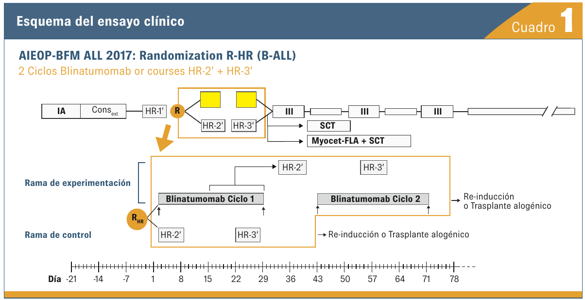
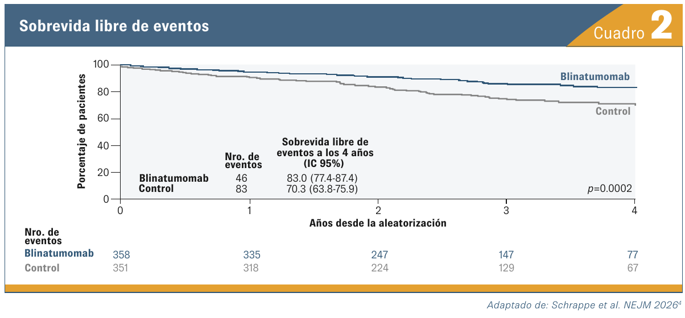
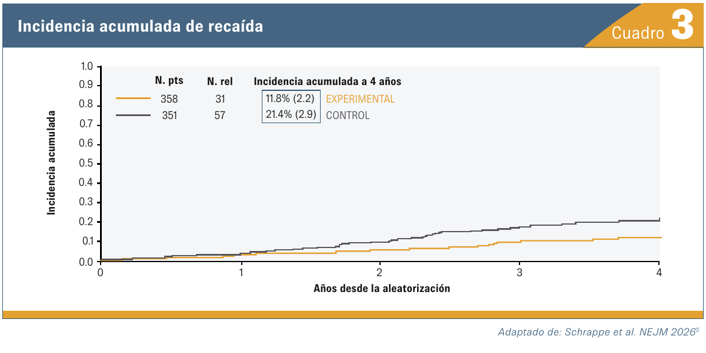
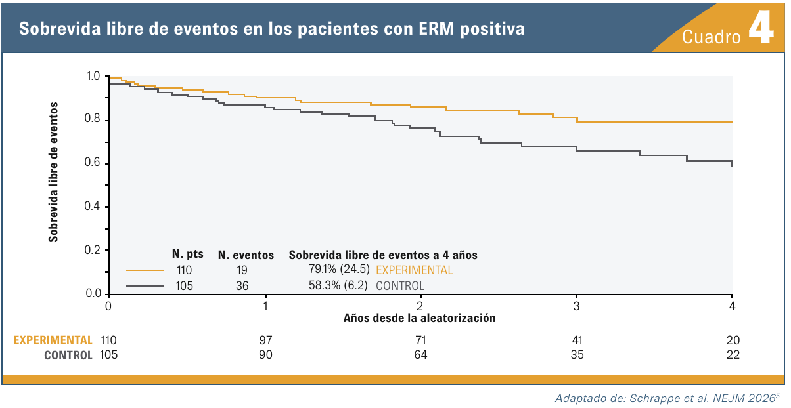

Blinatumomab en lugar de quimioterapia en pacientes pediátricos con leucemia linfoblástica B
01 DISEÑO DEL ESTUDIO
La pregunta
del ensayo.

02 RESULTADO PRINCIPAL
Supervivencia libre
de eventos.
EFS A CUATRO AÑOS
HR 0,51 (IC 95%: 0,35–0,73; p=0,0002). Datos reproducidos del PDF de muestra.

03 OTROS RESULTADOS
Más datos,
lectura completa.


04 CIERRE
Conclusiones.
- 01
El reemplazo de dos ciclos de quimioterapia altamente intensiva por dos ciclos de blinatumomab IV mejoró significativamente la supervivencia libre de eventos en LLA-B de alto riesgo.
- 02
Tanto las recaídas sistémicas como las relacionadas con el SNC se redujeron al reemplazar la quimioterapia en favor de la introducción de blinatumomab.
- 03
La respuesta de ERM más favorable en los pacientes tratados con blinatumomab es un indicador precoz de un mejor pronóstico.
- 04
Los pacientes con características de muy alto riesgo (candidatos a trasplante alogénico) presentan un mejor resultado debido a la reducción de la mortalidad relacionada con el trasplante.
- 05
El perfil de toxicidad de blinatumomab en pacientes de alto riesgo es muy favorable, aunque la toxicidad neurológica requiere un monitoreo estrecho.